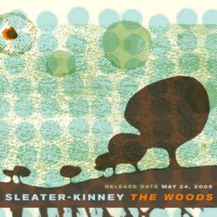

Monday, June the 6th, 2005
back to: title, date or indexes
Don't worry, the dark, dark woods are not real, that was only a story. But now I want to tell you about some other woods, specifically, The Woods, the new CD by Sleater-Kinney. Perhaps it is unseemly for a man of my advancing years to be so keen on a trio of young women who came to prominence as part of the Riot Grrl movement (whatever that was), but I have to say that if I am in the mood to listen to that kind of thing, Sleater-Kinney are probably—in the phrase beloved by music journalists of a certain vintage—“the greatest rock & roll band in the world”.
